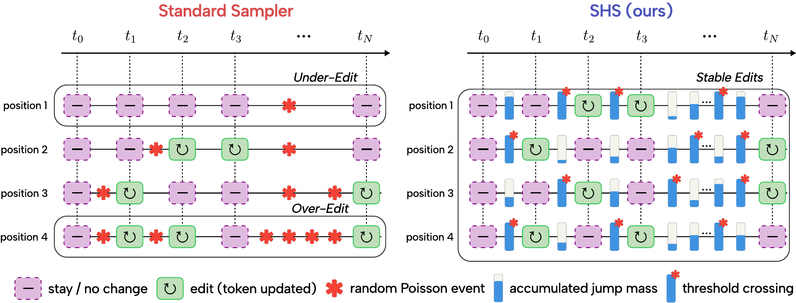
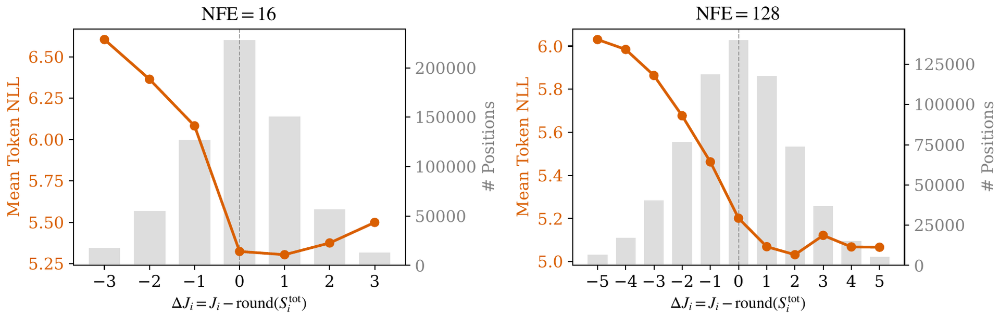
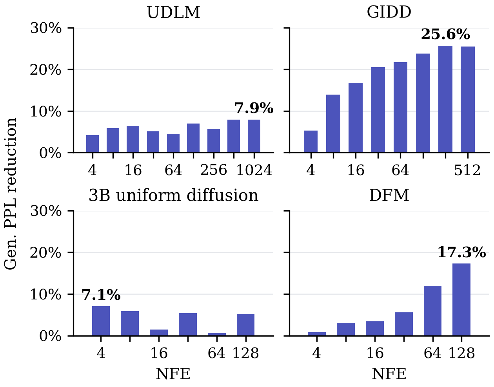
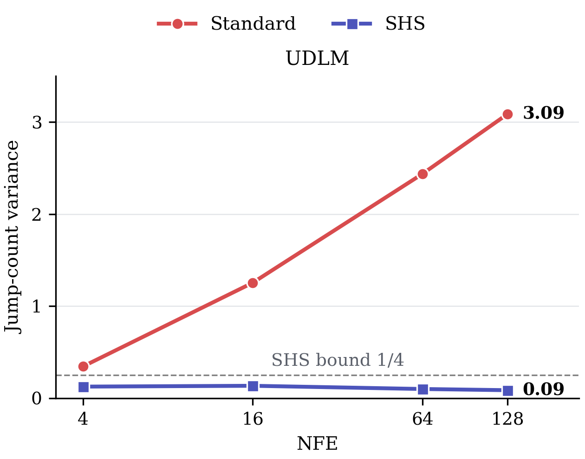

TL;DRUniform-noise discrete diffusion and flow models rewrite each token several times, and the standard sampler decides every rewrite by an independent coin flip. The number of edits per token then fluctuates more as the number of steps grows. SHS replaces the coin flips with one random phase per token and caps this variance at 1/4, with no retraining, hyperparameters, or extra forward passes.
Too few edits, too many edits
Uniform-noise discrete diffusion and flow models generate text by rewriting each token several times. Under the standard sampler, some tokens stop short with residual noise (under-editing); others keep being rewritten (over-editing).

Why: independent coin flips
Every token decides at every step, independently, whether to change. More steps make the variance of its jump count (number of edits) grow toward the total jump mass S instead of vanishing: 0.34 at NFE 4, 3.09 at NFE 128 on UDLM. Under-editing is what costs quality: token NLL rises steeply below the model-implied count.

Our method: one random phase per token
- Accumulate each token's jump mass S: the sum of the change probabilities the model already outputs at each step.
- Draw one phase θ ~ U(0, 1) per token; trigger an edit each time S crosses θ, θ+1, θ+2, …
- The jump count becomes ⌊S⌋ or ⌈S⌉, S on average, with variance at most 1/4 at any NFE: the minimum for an integer count with mean S.
- Which token gets written is unchanged. No retraining, hyperparameters, or extra forward passes.
Standard sampler
p = change_prob(x, t)
if rand() < p: # coin flip
x = sample_dest(x, t)
SHS
# theta ~ U(0,1) once; S = m = 0
S += change_prob(x, t)
if S >= theta + m:
x = sample_dest(x, t)
m += 1
Result: lower Gen. PPL at every NFE
- Lower generative perplexity (Gen. PPL) on every model and NFE tested: up to 26% on GIDD and 17% on DFM.
- On UDLM, jump-count variance stays below 1/4 under SHS while the standard sampler's reaches 3.09.
- Stacks with nucleus sampling and temperature, lowering Gen. PPL further.
- On GIDD, diversity moves toward real text and MAUVE rises from 0.38 to 0.54 at NFE 128.
Tested on UDLM, GIDD, DFM, and a 3B uniform diffusion model (∼110M to ∼3B parameters).

